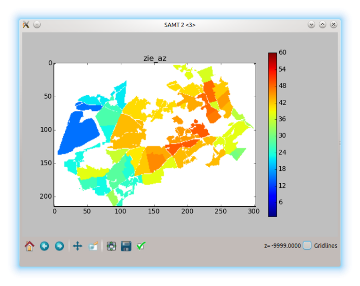
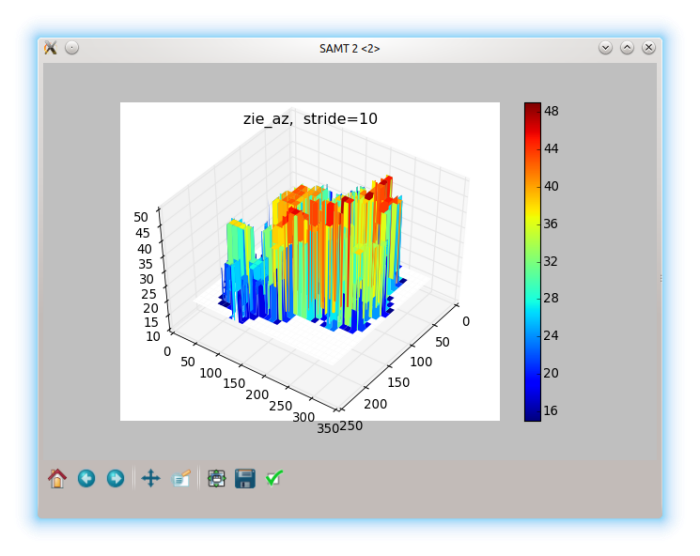
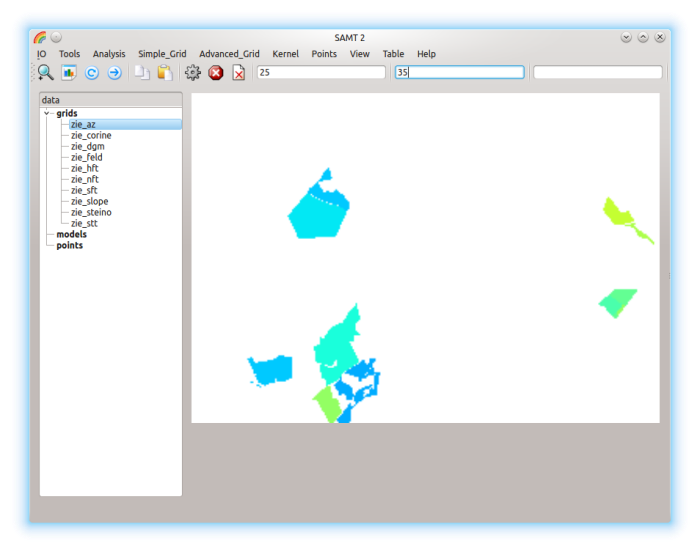
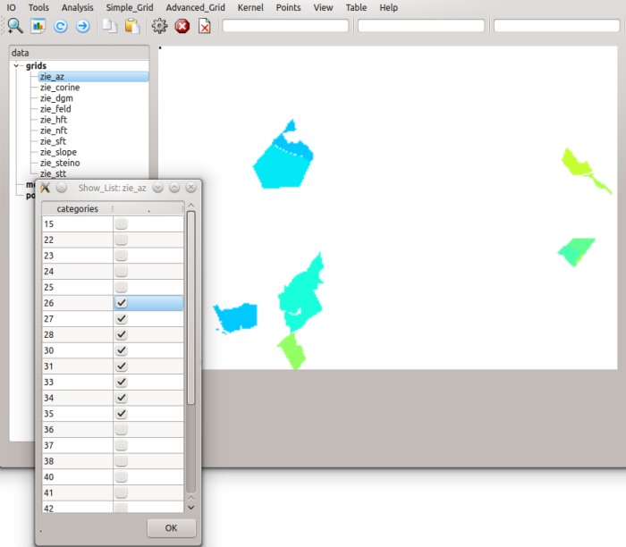
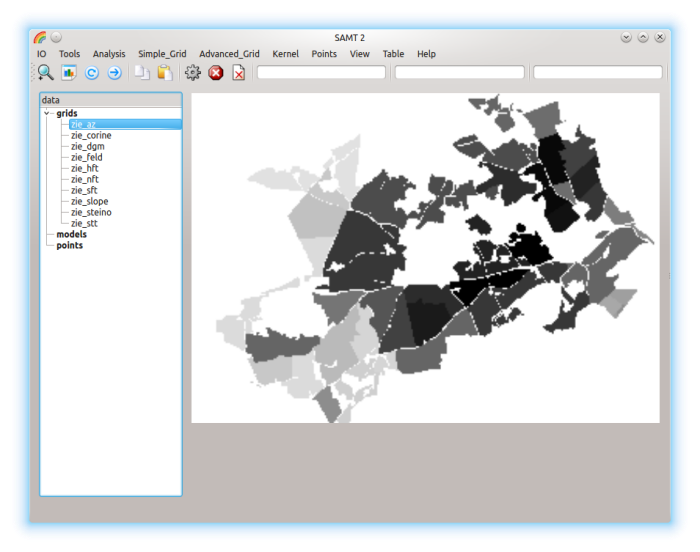

Show Colorbar the same grid within new limits P1=min, P2=max:
Show Colorbar the same grid within new limits P1=min, P2=max: Show_3d:
 Show 3d rotated with the mouse:
Show 3d rotated with the mouse: Show_Range:
 Show_List:

Show_Black_White:

Show Colorbar the same grid within new limits P1=min, P2=max:
Show 3d rotated with the mouse: